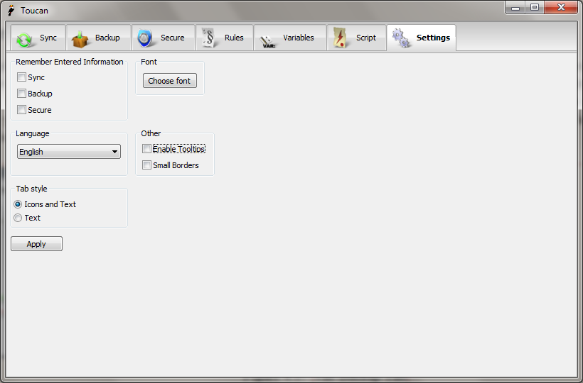

Settings¶
Overview¶
Toucan has a number of settings that can be changed to alter the behavior of the program itself. They can either be edited in the user interface or by modifying the settings.ini file located in the Data sub-directory or your Toucan installation manually.
User Interface¶

The various settings that Toucan uses can be modified here. Once changed you must click the apply button to save them or the modifications will be lost when you restart Toucan.
Remember Entered Information¶
These check boxes let you choose whether Toucan should store any information that you have entered between sessions without you having to explicitly save it as a job. You can only enable it on certain tabs if you wish.
Language¶
This drop down to specifies the language used by Toucan both in the user interface and on the command line.
Tab Style¶
The tab style allows you to remove the images from the tabs in Toucan.
Font¶
This changes the default font in Toucan, both the font and its size can be changed.
Other¶
- Tool-tips
- Adds descriptive tool-tips for all of the picture buttons in Toucan
- Small borders
- Shrinks the borders between items so Toucan requires less screen space, this is automatically used on very low resolution screens